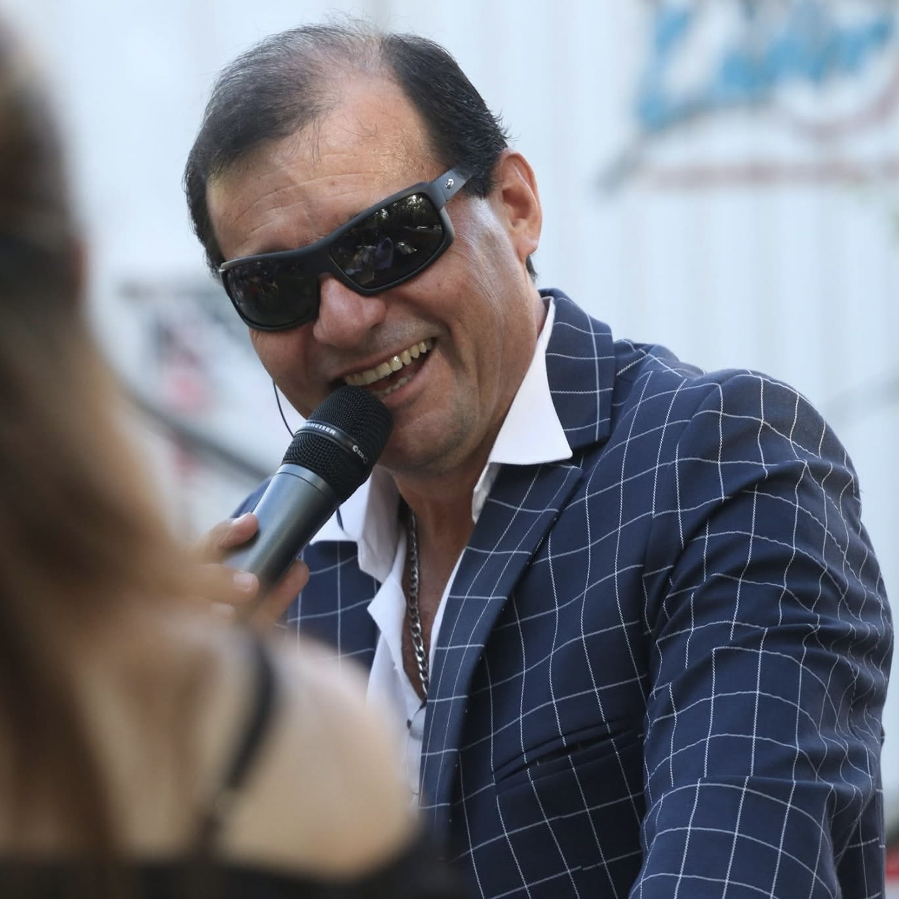

NUESTRA PROGRAMACIÓN SEMANAL
LUNES A VIERNES
06:00 — 07:00
Tangos, Café y Amigos — Locutores: Leonel Godoy y Mariano MontesLUNES A SÁBADOS
08:00 — 12:30
De Mi Tierra, Lo Mejor — Locutor: José María QuinterosLUNES A VIERNES
21:00 — 22:00
Un Sueño En Un Viaje — Locutora: Estela MontesSÁBADOS Y DOMINGOS
05:00 — 07:00
Hoy, Folklore — Locutor: Marcelo Simón

De Mi Tierra, Lo Mejor
Hoy, Folklore

Un Sueño En Un Viaje

Tangos, Café y Amigos
×